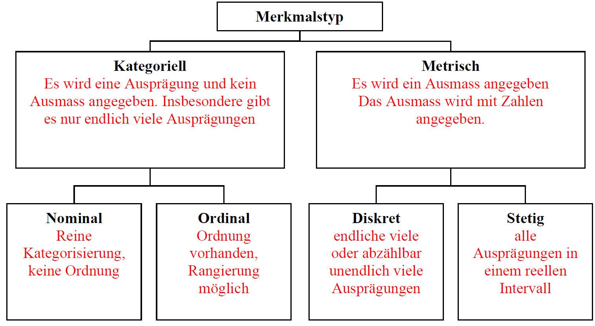
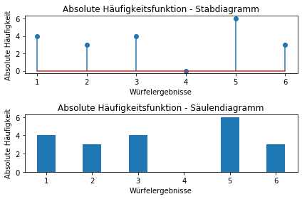
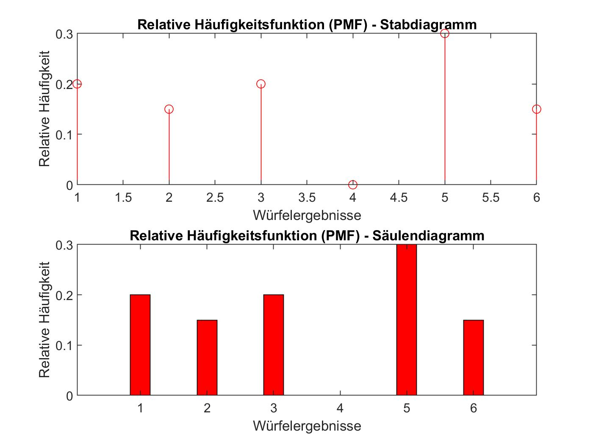
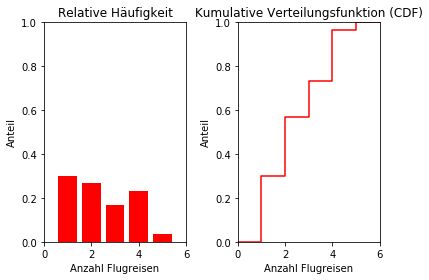
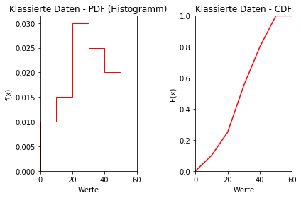
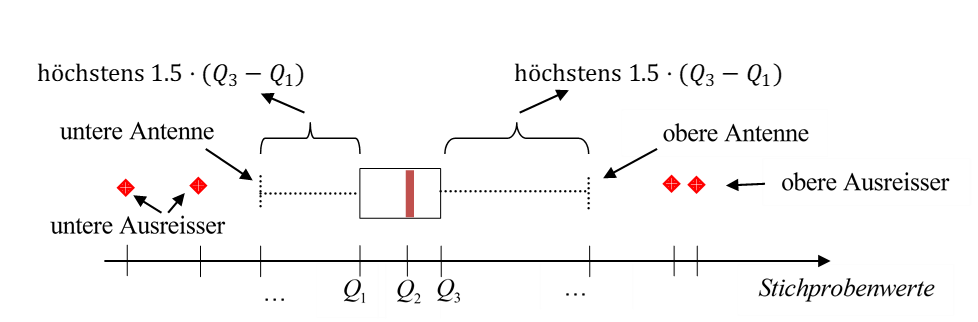

Eine Stichprobe \((x_1,...,x_n)\) der Länge \(n\) ist eine Auswahl von \(n\) Objekten aus einer Grundgesamtheit. Meist handelt es sich um eine Zufallsstichprobe, d.h. die Auswahl der Objekte ist zufällig
und repräsentativ. Relevant ist oft nur ein bestimmtes Merkmal, z.B. die Partei, für welche die i-te befragte Person in der kommenden Wahl stimmen wird. Das untersuchte Merkmal kann bestimmte Ausprägungen annehmen. Im Beispiel wäre das
die Menge der zur Wahl stehenden Parteien. Eine solche Stichprobe \((x_1,...,x_n)\) wäre zum Beispiel eine Folge von \(n\) Parteinamen \(x_i\).
Merkmale, wie die Partei, die Augenfarbe, das Alter, die Prüfungsnote, die Laufzeit, etc. werden danach eingeteilt, ob die möglichen Ausprägungen eine natürliche Ordnungstruktur tragen oder ob nur ein nominaler Zusammenhang besteht. Im obigen Beispiel handelt es sich um eine Menge von Parteinamen, welche ohne weiteres zutun keine Anordnung besitzen. Es handelt sich hier um einen nominalen Merkmalstyp. Allgemein werden die folgenden 4 Merkmalstypen unterschieden:

Sei \((x_1,...,x_n)\) eine Stichprobe eines metrischen Merkmals.
Die reelle Funktion \( h: \mathbb R \to \mathbb R \, , \, h(x) =\) Anzahl der \(1 \leq i \leq n\) mit \(x_i=x\), heisst (empirische) absolute Häufigkeitsfunktion der Stichprobe.
Die reelle Funktion \( f: \mathbb R \to[0,1] \, , \, f(x) = \frac{h(x)}{n} \), heisst (empirische) relative Häufigkeitsfunktion oder (empirische) Dichtefunktion der Stichprobe. Häufig wird dafür das Kürzel PMF vom Englischen
probability mass function, benutzt.
Visualisiert werden die beiden Funktionen als Stab-oder Säulendiagramm. Nachfolgend Stab-und Säulendiagramme für ein Würfelexperiment zu sehen.


Sei \((x_1,...,x_n)\) eine Stichprobe eines metrischen Merkmals mit der absoluten Häufigkeitsfunktion \( h(x) \) und der PMF \( f(x)\).
Die reelle Funktion \( H: \mathbb R \to \mathbb R \, , \, H(x) =\) Summe aller \( h(y) \) mit \( y\leq x\) heisst (empirische) absolute Summenhäufigkeit der Stichprobe.
Die reelle Funktion \( F: \mathbb R \to [0,1] \, , \, F(x) =\) Summe aller PMF Werte \( f(y) \) mit \( y\leq x\) heisst (empirische) relative Summenhäufigkeit oder (empirische) kumulative Verteilungsfunktion oder kurz CMF, vom Englischen cumulative mass function, der Stichprobe.
In den Diagrammen sind die absolute Summenhäufigkeit und die CMF aus einem Besipiel zu sehen.

(1) \( 0\leq f(x) \leq 1\) und \( 0\leq F(x) \leq 1\), für alle \(x \in \mathbb R\).
(2) \( \sum\limits_{x = - \infty }^\infty {f(x)} = 1 \,\) und \(\, F(z) = \sum\limits_{x = - \infty }^z {f(x)} \)
(3) Die CMF \(F(x) \) ist eine rechtsseitig stetige Treppenfunktion, d.h. bei jedem Treppenabsatz des Graphen gehört der obere Punkt zum und der untere nicht zum Graph).
(4) Monotonie: Aus \(\,x \le y \,\) folgt \(\, F(x) \le F(y) \)
(5) Es gibt reelle Zahlen \( a,b \) mit \(F(a) = 0 \) und \(F(b) = 1 \)
(6) Der Anteil aller Stichprobenwerte \(x_i \) mit \( x_i \le b \) ist \( F(b) \,\).
(7) Der Anteil aller Stichprobenwerte \(x_i \) mit \( a < x_i \le b \) ist \( F(b) - F(a) \,\).
(8) Der Anteil aller Stichprobenwerte \(x_i \) mit \( x_i > b \) ist \( 1 - F(b)\, \).
Gegeben sei eine Klassierung \((K_1,...,K_m)\), d.h. die i-te Klasse \(K_i\) ist ein (nichtleeres) halboffenes Intervall \(K_i =[a_i ,a_{i+1}[ \) mit der Klassenbreite \(b_i= a_{i+1} -a_i\) und den relativen Klässenhäufigkeiten \(f_i\), mit \(f_1+...+f_m=1\).
Die reelle Funktion \( g: \mathbb R \to[0,1] \, , \, g(x) = {f_i} \), falls \( x \in K_i\), sonst \(g(x)=0 \),heisst (empirische) relative Häufigkeitsfunktion der klassierten Stichprobe.
Die reelle Funktion \( f: \mathbb R \to[0,1] \, , \, f(x) = \frac{g(x)}{b_i} \), falls \( x \in K_i\), sonst \(f(x)=0 \), heisst (empirische) Dichtefunktion der klassierten Stichprobe. Häufig wird dafür das Kürzel PDF vom Englischen probability density function, benutzt.
Die reelle Funktion \( F: \mathbb R \to [0,1] \, , \, F(x) =\int_{-\infty}^x f(y) dy \) heisst (empirische) kumulative Verteilungsfunktion oder kurz CDF, vom Englischen cumulative distribution function, der klassierten Stichprobe.
Im Diagramm sind PDF und CDF einer klassierten Stichprobe zu sehen:

(1) \( 0\leq f(x) \leq 1\) und \( 0\leq F(x) \leq 1\), für alle \(x \in \mathbb R\).
(2) \( \int_{- \infty }^\infty {f(x) \, dx } = 1 \,\) und \(\, F(x) = \int_{ - \infty }^x {f(y)\, dy } \) und \(\, F'(x) = f(x)\).
(3) Der Graph der CDF \(F(x) \) ist ein Streckenzug.
(4) Der Graph von \(f(x)\) ist eine Säulenfunktion. Der Flächeninhalt der i-ten Säule entspricht der relativen Häufigkeit der i-ten Klasse.
(5) Monotonie: Aus \(\,x \le y \,\) folgt \(\, F(x) \le F(y) \)
(6) Es gibt reelle Zahlen \( a,b \) mit \(F(a) = 0 \) und \(F(b) = 1 \).
(7) Der Anteil der Stichprobenwerte \(x\) mit \( x\le b \) ist \( F(b) \,\).
(8) Der Anteil aller Stichprobenwerte \(x\) mit \( a < x \le b \) (bzw. \( a \le x \le b \) ) ist \( F(b) - F(a) \,\).
(9) Der Anteil aller Stichprobenwerte \(x\) mit \( x > b \) (bzw. \( x \geq b \)) ist \( 1 - F(b)\, \).
(10) Für \( x \in K_i\) gilt: \( \frac {F(x)-F(a_i)}{x-a_i}= \frac {F(a_{i+1})-F(a_i)}{a_{i+1}-a_i} \) und \( F(x)= \underbrace{F(a_i)}_{=f_1+...+f_{i-1}}+ \frac {{x-a_i}}{a_{i+1}-a_i}\cdot \underbrace{(F(a_{i+1})-F(a_i))}_{=f_i} \)
Um Verteilungen verschiedener Stichproben vergleichen zu können bedient man sich einiger weniger charakteristischer Merkmale, sogenannter Kenngrössen. Wir betrachten Lagemasse und Streumasse. Lagemasse beschreiben das Zentrum der Verteilung
und Streumasse charakterisieren die Abweichung vom Zentrum.
Eine reelle Zahl R heisst ein (empirisches) q-Quantil (bzw. ein \(q\cdot 100\) Perzentil ) der Stichprobe , falls der Anteil der Stichprobenwerte \( \leq R \) mindestens \(q \) und der Anteil der Stichprobenwerte \( \geq R \) mindestens \(1-q\) ist. Das 0.25 Quantil wird 1. Quartil, das 0.5 Quantil wird 2. Quartil oder Median und das 0.75 Quantil wird 3. Quartil genannt.
Zur eindeutigen Bestimmung der q-Quantile \( R_q\) einer (nichtklassierten) Stichprobe \((x_1,...,x_n)\) (mit den sortierten Stichprobenwerten \((x_{[1]},...,x_{[n]})\)) für \( 0<q<1\) wird folgende Methode verwendet:
Ist \(z= n \cdot q \) eine ganze Zahl, dann definiert man \( R_q =\frac{1}{2} (x_{[z]} +x_{[z+1]}) \), andernfalls nimmt man die nächstgrössere ganze Zahl \( z= \lceil n \cdot q \rceil \) und setzt \( R_q =x_{[z]} \).
Bei klassierten Stichproben sind die q-Quantile \( R_q\) eindeutig bestimmt und werden mit Hilfe der CDF \(F(x) \) und der Gleichung \( F(R_q ) = q \) bestimmt:
Liegt \( R_q \) in der i-ten Klasse, d.h. \( R_q \in K_i\) so gilt: \( R_q = a_i + \frac{ q- \overbrace{F(a_i)}^{=f_1+...+f_{i-1}}}{\underbrace{F(a_{i+1}) -F(a_i) }_{=f_i} } \cdot (a_{i+1} -a_i )\).
Box: Zeigt das erste Quartil \(Q_1\), den Median \(Q_2\) und das dritte Quartil \(Q_3\).
Quartilsabstand: \(Q_3-Q_1\), d.h. die Breite der Box.
Untere Antenne (unterer Whisker): Minimum derjenigen Stichprobenwerte \( \geq Q_1 - 1.5 (Q_3-Q_1)\).
Obere Antenne (oberer Whisker): Maximum derjenigen Stichprobenwerte \( \leq Q_3 +1.5 (Q_3-Q_1)\).
Ausreisser : Stichprobenwerte, welche sich ausserhalb des durch die Box und die Antennen markierten Bereichs befinden.
Stichprobenmittelwert, Varianz und Standardabweichung (nicht klassiert)
Sei \((x_1,...,x_n)\) eine Stichprobe eines metrischen Merkmals.
(1) Der Stichprobenmittelwert \( \overline x = \frac {1}{n} \cdot \sum_{i=1}^n {x_i } \) ist ein Lagemass der Verteilung der Stichprobe.
(2) Die (Stichproben-)Varianz \( \tilde{s}^2=\frac {1}{n} \sum_{i=1}^n {(x_i-\overline x)^2 } \) und die korrigierte (Stichproben-)Varianz \( {s}^2=\frac {1}{n-1} \sum_{i=1}^n {(x_i-\overline x)^2 } \) sind Streumasse der Verteilung der Stichprobe.
(3) Die (Stichproben-)Standardabweichung \( \tilde{s}=\sqrt{\tilde{s}^2 } \) und die korrigierte (Stichproben-)Standardabweichung \( s=\sqrt{{s}^2 }\) sind Streumasse der Verteilung der Stichprobe.
(1) Der Stichprobenmittelwert \( \overline x = \sum_{i=1}^m {M_i \cdot f_i } \) ist ein Lagemass der klassierten Stichprobe.
(2) Die (Stichproben-)Varianz \( \tilde{s}^2= \sum_{i=1}^n {(M_i-\overline x)^2 \cdot f_i } \) und die korrigierte (Stichproben-)Varianz \( {s}^2=\frac {n}{n-1} \cdot \tilde{s}^2 \) sind Streumasse der Verteilung der klassierten Stichprobe.
(3) Die (Stichproben-)Standardabweichung \( \tilde{s}=\sqrt{\tilde{s}^2 } \) und die korrigierte (Stichproben-)Standardabweichung \( s=\sqrt{{s}^2 }\) sind Streumasse der klassierten Stichprobe.
Es seien \(x=(x_1,...,x_n)\) und \(y=(y_1,...,y_n)\) zwei Stichproben eines metrischen Merkmals. Wir verwenden die folgenden Abkürzungen: \(x+y=(x_1+y_1,...,x_n+y_n)\) und \( \alpha x= (\alpha\cdot x_1,...,\alpha\cdot x_n) \) und \(x^2=(x_1^2,...,x_n^2)\).
(1) Linearität: \( \overline{x+y} = \overline{x} + \overline{y}\) und \(\overline{\alpha x} = \alpha\cdot \overline{x}\), mit \(\alpha \in \mathbb R \).
(2) Verschiebungssatz für die Varianz: \( \tilde{s}^2 = \overline{x^2} - \overline{x}^2 \).
(3) Zusammenhang zwischen korrgierter und nichtkorrigierter Varianz: \( s^2 = \frac{n}{n-1} \tilde{s}^2\).